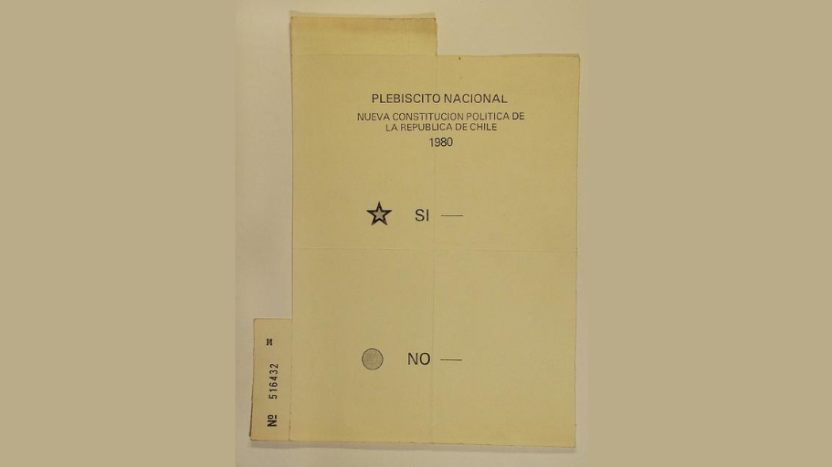

Chile 1980 — 2023
¿Cómo se ha gestado el desencanto democrático actual? Un recorrido de datos por los candados heredados de 1980, la brecha entre apoyo y satisfacción, y los hitos que llevaron al estallido social y al fallido proceso constitucional.
Desplaza para leer ↓
En 1980, en plena dictadura, una Constitución redactada por la Comisión Ortúzar y revisada por el Consejo de Estado que presidía Jorge Alessandri fue sometida a un plebiscito sin registro electoral y bajo fuertes restricciones a la libertad de expresión y reunión. El texto fue aprobado con un 67% de los votos y comenzó a regir en plenitud en 1990, con el retorno a la democracia.
Su diseño incorporó mecanismos pensados para limitar lo que esa futura democracia pudiera cambiar: quórums supramayoritarios de reforma constitucional, leyes orgánicas constitucionales, un Tribunal Constitucional con amplias atribuciones y un sistema electoral binominal. Algunos de estos candados se abrieron con las reformas de 1989 y 2005; otros —como los quórums de reforma— siguieron vigentes y son parte del trasfondo institucional del desencanto que exploran los datos a continuación.

El 11 de marzo de 1990 Patricio Aylwin asumió la Presidencia y la Constitución de 1980 comenzó a operar en democracia. El apoyo al nuevo régimen fue alto desde el inicio, aunque condicionado por los candados heredados de la dictadura. Las tres décadas siguientes muestran una trayectoria de apoyo relativamente estable y satisfacción decreciente. Recorre el gráfico con el cursor para ver los datos de cada año, y haz clic en los puntos rojos para abrir el contexto de cada hito.
Apoyo, satisfacción y participación electoral — Chile 1989–2023
En pantallas chicas, desliza cada gráfico horizontalmente →
Fuente: Latinobarómetro (IDENPA=152). 2019: CEP Encuesta N°84. Participación: Servel / DecideChile, % del padrón electoral. Puntos rojos = hitos clicables.
Confianza en instituciones (gráfico complementario)
Fuente: Latinobarómetro. Congreso, Gobierno, Partidos y Policía. Sin dato = sin medición comparable ese año.
Los datos muestran un patrón consistente: el apoyo abstracto a la democracia se mantuvo relativamente alto, pero la satisfacción con su funcionamiento, la confianza en sus instituciones y la participación electoral cayeron de forma sostenida durante tres décadas. El estallido de 2019 no fue un quiebre repentino: fue el punto de llegada de un desenganche acumulado desde una Constitución diseñada, desde 1980, para resistir el cambio. El propio proceso para reemplazarla —rechazado dos veces entre 2022 y 2023— terminó replicando, en sus resultados, el mismo desencanto que lo originó.